VS Code 中的 Python 调试
Python 扩展通过 Python Debugger 扩展支持对多种类型的 Python 应用程序进行调试。有关基本调试的简短演练，请参阅教程 - 配置和运行调试器。另请参阅 Flask 教程。这两个教程演示了核心技能，如设置断点和逐步执行代码。
有关常规调试功能，如检查变量、设置断点以及其他不依赖于语言的调试活动，请查阅 VS Code 调试。
本文主要介绍特定于 Python 的调试配置，包括特定应用程序类型和远程调试的必要步骤。
Python Debugger 扩展
Python Debugger 扩展在安装 VS Code 的 Python 扩展时会自动安装。它使用 debugpy 为多种类型的 Python 应用程序提供调试功能，包括脚本、Web 应用、远程进程等。
要验证它是否已安装，请打开扩展视图（kb(workbench.view.extensions)）并搜索 @installed python debugger。您应该会在结果中看到 Python Debugger 扩展已列出。
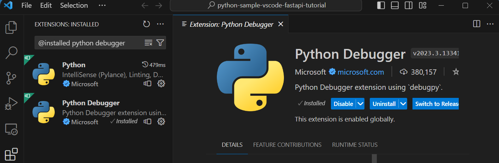
您可以参考该扩展的 README 页面，了解支持的 Python 版本信息。
初始化配置
配置决定 VS Code 在调试会话期间的行为。配置定义在 launch.json 文件中，该文件存储在您工作区的 .vscode 文件夹中。
注意：要更改调试配置，您的代码必须存储在一个文件夹中。
要初始化调试配置，请首先选择侧边栏中的运行视图：
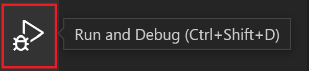
如果您尚未定义任何配置，您将看到一个运行和调试按钮以及一个用于创建配置（launch.json）文件的链接：
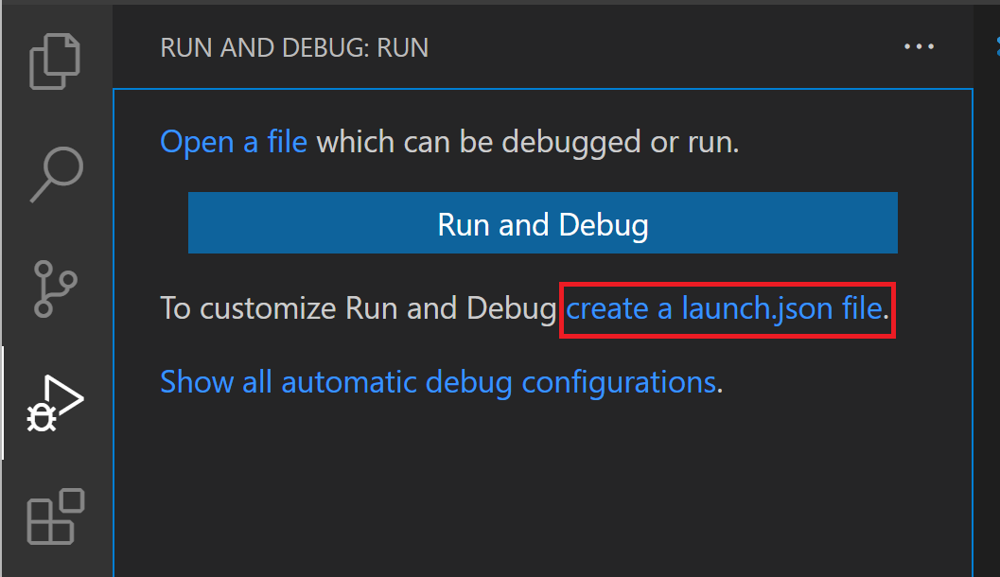
要生成带有 Python 配置的 launch.json 文件，请执行以下步骤：
- 选择创建 launch.json 文件链接（如上图所示）或使用运行 > 打开配置菜单命令。
- 从调试器选项列表中选择 Python Debugger。
- 命令面板将打开一个配置菜单，允许您选择要用于 Python 项目文件的调试配置类型。如果您想调试单个 Python 脚本，请在出现的选择调试配置菜单中选择 Python File。
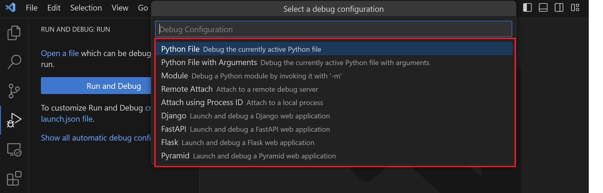
注意：在不存在配置的情况下，通过调试面板、kbstyle(F5)或运行 > 开始调试启动调试会话也会弹出调试配置菜单，但不会创建launch.json文件。
- 然后，Python Debugger 扩展会创建并打开一个
launch.json文件，其中包含基于您之前选择的预定义配置，在本例中为 Python File。您可以修改配置（例如添加参数），也可以添加自定义配置。
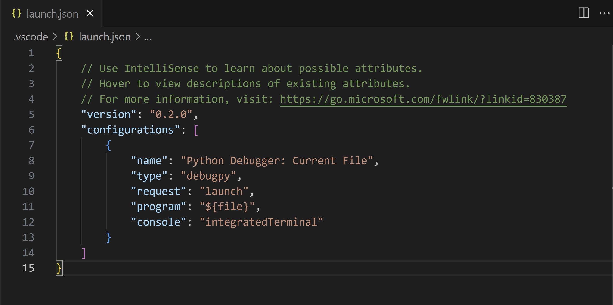
配置属性的详细信息将在本文后面的标准配置和选项中介绍。本文中的调试特定应用类型部分还会介绍其他配置。
添加更多配置
默认情况下，VS Code 仅显示 Python Debugger 扩展提供的最常见配置。您可以通过使用配置列表和 launch.json 编辑器中显示的添加配置命令，选择要包含在 launch.json 中的其他配置。使用该命令时，VS Code 会提示您列出所有可用配置（请确保选择 Python 选项）：
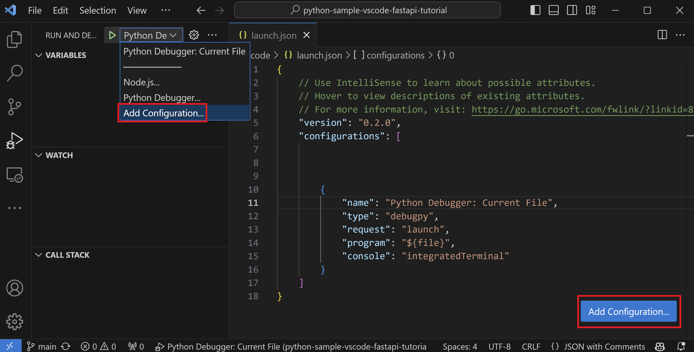
选择使用进程 ID 附加会生成以下结果：
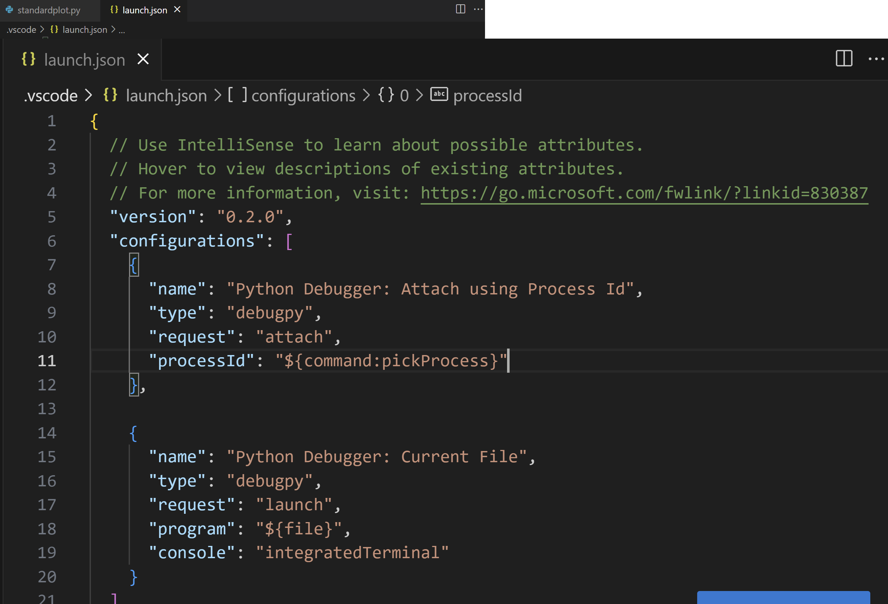
有关所有这些配置的详细信息，请参阅调试特定应用类型。
在调试过程中，状态栏会显示当前配置和当前的调试解释器。选择配置会弹出一个列表，您可以从中选择不同的配置：
默认情况下，调试器使用为工作区选择的相同解释器，就像 VS Code 的 Python 扩展的其他功能一样。要专门为调试使用不同的解释器，请在 launch.json 中为相应的调试器配置设置 python 的值。或者，使用状态栏上的 Python 解释器指示器选择不同的解释器。
基本调试
如果您只想调试一个 Python 脚本，最简单的方法是选择编辑器运行按钮旁边的向下箭头，然后选择 Python Debugger: Debug Python File。
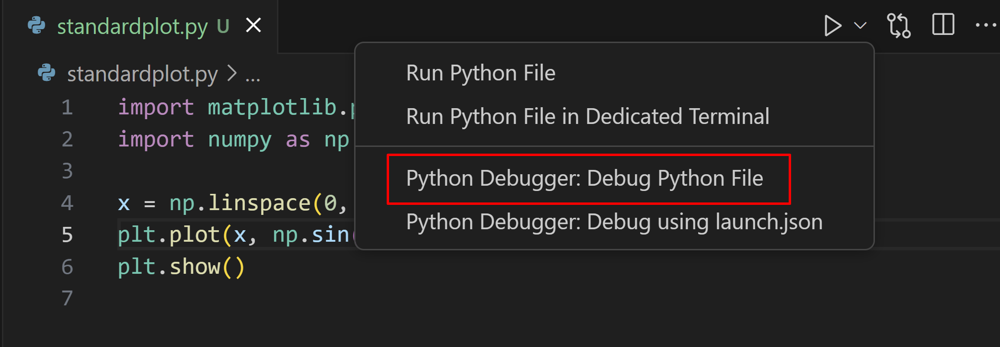
如果您想调试使用 Flask、Django 或 FastAPI 的 Web 应用程序，Python Debugger 扩展会通过运行和调试视图中的显示所有自动调试配置选项，根据您的项目结构提供动态创建的调试配置。
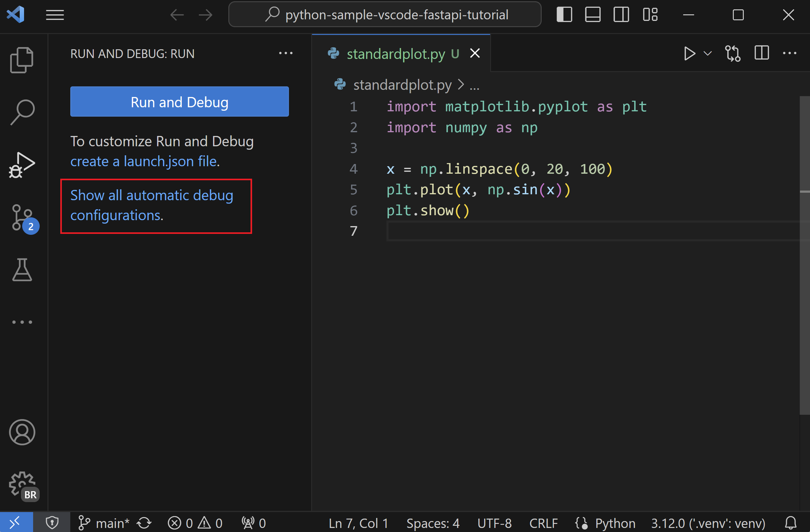
但如果您想调试其他类型的应用程序，可以通过运行视图单击运行和调试按钮来启动调试器。
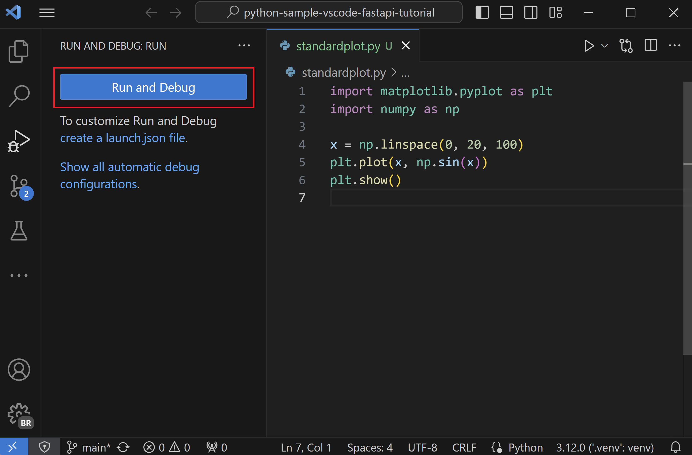
当未设置任何配置时，您将看到一个调试选项列表。在这里，您可以选择适当的选项来快速调试代码。
两个常见选项是使用 Python File 配置来运行当前打开的 Python 文件，或使用使用进程 ID 附加配置将调试器附加到已在运行的进程。
有关创建和使用调试配置的信息，请参阅初始化配置和添加更多配置部分。添加配置后，可以从下拉列表中选择它，并使用开始调试按钮（kbstyle(F5)）启动。
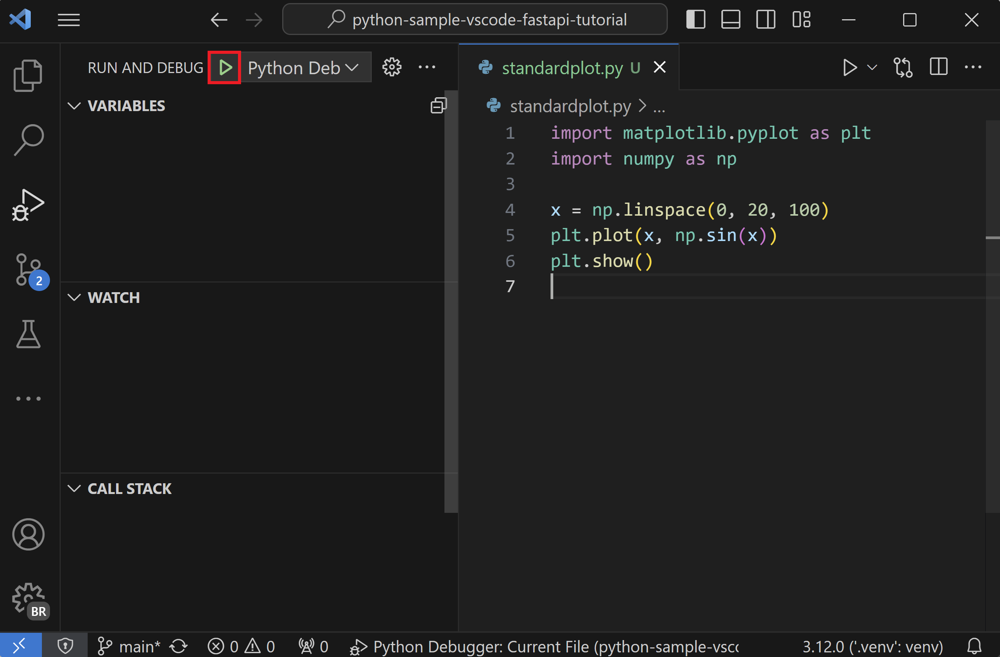
命令行调试
如果在您的 Python 环境中安装了 debugpy，也可以从命令行运行调试器。
安装 debugpy
您可以使用 python -m pip install --upgrade debugpy 将 debugpy 安装到您的 Python 环境中。
[!TIP]
虽然使用虚拟环境不是必需的，但它是推荐的最佳实践。您可以在 VS Code 中通过打开命令面板（kb(workbench.action.showCommands)）并运行 Python: Create Environment 命令，或在环境管理器视图中选择 + 按钮来创建虚拟环境。
命令行语法
调试器的命令行语法如下：
python -m debugpy
--listen | --connect
[<host>:]<port>
[--wait-for-client]
[--configure-<name> <value>]...
[--log-to <path>] [--log-to-stderr]
<filename> | -m <module> | -c <code> | --pid <pid>
[<arg>]...示例
在命令行中，您可以使用以下语法在指定端口（5678）和脚本上启动调试器。此示例假设脚本是长时间运行的，并省略了 --wait-for-client 标志，这意味着脚本不会等待客户端附加。
python -m debugpy --listen 5678 ./myscript.py然后，您可以使用以下配置从 VS Code Python Debugger 扩展进行附加。
{
"name": "Python Debugger: Attach",
"type": "debugpy",
"request": "attach",
"connect": {
"host": "localhost",
"port": 5678
}
}注意：对于 listen，指定主机是可选的，默认使用 127.0.0.1。
如果您想调试远程代码或在 Docker 容器中运行的代码，则需要在远程机器或容器上修改前面的 CLI 命令以指定主机。
python -m debugpy --listen 0.0.0.0:5678 ./myscript.py关联的配置文件如下所示。
{
"name": "Attach",
"type": "debugpy",
"request": "attach",
"connect": {
"host": "remote-machine-name", // 将此替换为远程机器名称
"port": 5678
}
}注意：请注意，当您指定127.0.0.1或localhost以外的主机值时，您正在开放一个端口以允许来自任何机器的访问，这会带来安全风险。在进行远程调试时，您应确保采取适当的安全预防措施，例如使用 SSH 隧道。
命令行选项
| 标志 | 选项 | 描述 | ||
|---|---|---|---|---|
| --------- | --------- | --------- | ||
| --listen 或 --connect | [ | 必需。指定调试适配器服务器等待传入连接（--listen）或与等待传入连接的客户端进行连接（--connect）的主机地址和端口。这与 VS Code 调试配置中使用的地址相同。默认情况下，主机地址为 localhost (127.0.0.1)。 | ||
| --wait-for-client | 无 | 可选。指定代码在调试服务器有连接之前不应运行。此设置允许您从代码的第一行开始调试。 | ||
| --log-to | | 可选。指定用于保存日志的现有目录的路径。 | ||
| --log-to-stderr | 无 | 可选。启用 debugpy 直接写入日志到 stderr。 | ||
| --pid | | 可选。指定一个已在运行的进程，用于将调试服务器注入其中。 | ||
| --configure-\ | | 可选。设置一个调试属性，该属性必须在客户端连接之前对调试服务器已知。此类属性可以直接在 launch 配置中使用，但对于 attach 配置，则必须以这种方式设置。例如，如果您不希望调试服务器自动将其自身注入到由您附加到的进程创建的子进程中，请使用 --configure-subProcess false。 |
注意：[] 可用于将命令行参数传递给正在启动的应用程序。
通过网络连接进行附加调试
本地脚本调试
有时您可能需要调试由另一个进程本地调用的 Python 脚本。例如，您可能正在调试一个运行不同 Python 脚本以完成特定处理任务的 Web 服务器。在这种情况下，您需要在脚本启动后立即将 VS Code 调试器附加到该脚本：
- 运行 VS Code，打开包含脚本的文件夹或工作区，如果尚不存在
launch.json，则为该工作区创建一个。 - 在脚本代码中，添加以下内容并保存文件：
import debugpy # 5678 是 VS Code 调试配置中的默认附加端口。除非指定了主机和端口，否则主机默认为 127.0.0.1 debugpy.listen(5678) print("Waiting for debugger attach") debugpy.wait_for_client() debugpy.breakpoint() print('break on this line') - 使用 Terminal: Create New Terminal 打开一个终端，这将激活脚本所选的环境。
- 在终端中，安装 debugpy 包。
- 在终端中使用脚本启动 Python，例如
python3 myscript.py。您应该会看到代码中包含的 "Waiting for debugger attach" 消息，脚本会在debugpy.wait_for_client()调用处暂停。 - 切换到运行和调试视图（
kb(workbench.view.debug)），从调试器下拉列表中选择适当的配置，然后启动调试器。 - 调试器应该会在
debugpy.breakpoint()调用处停止，从那时起您可以正常使用调试器。您还可以选择使用 UI 在脚本代码中设置其他断点，而不是使用debugpy.breakpoint()。使用 SSH 进行远程脚本调试
远程调试允许您在 VS Code 中本地逐步执行程序，而程序在远程计算机上运行。不需要在远程计算机上安装 VS Code。为了增加安全性，您可能需要使用安全连接（如 SSH）连接到远程计算机进行调试。
注意：在 Windows 计算机上，您可能需要安装 Windows 10 OpenSSH 才能使用 ssh 命令。
以下步骤概述了设置 SSH 隧道的一般过程。SSH 隧道允许您在本地机器上工作，就像直接在远程机器上操作一样，比开放端口进行公共访问更安全。
在远程计算机上：
- 通过打开
sshd_config配置文件（在 Linux 上位于/etc/ssh/下，在 Windows 上位于%programfiles(x86)%/openssh/etc下）并添加或修改以下设置来启用端口转发：AllowTcpForwarding yes注意：AllowTcpForwarding 的默认值是 yes，因此您可能不需要进行更改。
- 如果您必须添加或修改
AllowTcpForwarding，请重启 SSH 服务器。在 Linux/macOS 上，运行sudo service ssh restart；在 Windows 上，运行services.msc，在服务列表中选择 OpenSSH 或sshd，然后选择重启。
在本地计算机上：
- 通过运行
ssh -2 -L sourceport:localhost:destinationport -i identityfile user@remoteaddress来创建 SSH 隧道，为destinationport选择一个端口，并在user@remoteaddress中使用适当的用户名和远程计算机的 IP 地址。例如，要在 IP 地址 1.2.3.4 上使用端口 5678，命令应为ssh -2 -L 5678:localhost:5678 -i identityfile user@1.2.3.4。您可以使用-i标志指定身份文件的路径。 - 验证您是否可以在 SSH 会话中看到提示符。
- 在您的 VS Code 工作区中，在
launch.json文件中创建远程调试配置，将端口设置为与ssh命令中使用的端口匹配，并将主机设置为localhost。这里使用localhost是因为您已经设置了 SSH 隧道。{ "name": "Python Debugger: Attach", "type": "debugpy", "request": "attach", "port": 5678, "host": "localhost", "pathMappings": [ { "localRoot": "${workspaceFolder}", // 映射 C:\Users\user1\project1 "remoteRoot": "." // 映射到当前工作目录 ~/project1 } ] }
开始调试
现在已设置好到远程计算机的 SSH 隧道，您可以开始调试了。
- 两台计算机：确保相同的源代码可用。
- 两台计算机：安装 debugpy。
- 远程计算机：有两种方式指定如何附加到远程进程。
- 在源代码中，添加以下行，将
address替换为远程计算机的 IP 地址和端口号（此处仅以 IP 地址 1.2.3.4 作为示例）。import debugpy # 允许其他计算机在此 IP 地址和端口上附加到 debugpy。 debugpy.listen(('1.2.3.4', 5678)) # 暂停程序，直到远程调试器附加 debugpy.wait_for_client()
- 在源代码中，添加以下行，将
listen 中使用的 IP 地址应为远程计算机的私有 IP 地址。然后，您可以正常启动程序，它将在调试器附加之前暂停。
- 通过 debugpy 启动远程进程，例如：
python3 -m debugpy --listen 1.2.3.4:5678 --wait-for-client -m myproject
这将使用 python3 启动包 myproject，使用远程计算机的私有 IP 地址 1.2.3.4 并在端口 5678 上监听（您也可以通过指定文件路径而不是使用 -m 来启动远程 Python 进程，例如 ./hello.py）。
- 本地计算机：仅当您按照上述方式修改了远程计算机上的源代码时，然后在源代码中，添加在远程计算机上添加的相同代码的注释副本。添加这些行可确保两台计算机上的源代码逐行匹配。
#import debugpy # 允许其他计算机在此 IP 地址和端口上附加到 debugpy。 #debugpy.listen(('1.2.3.4', 5678)) # 暂停程序，直到远程调试器附加 #debugpy.wait_for_client() - 本地计算机：切换到 VS Code 中的运行和调试视图（
kb(workbench.view.debug)），选择 Python Debugger: Attach 配置 - 本地计算机：在您想要开始调试的代码位置设置断点。
- 本地计算机：使用修改后的 Python Debugger: Attach 配置和"开始调试"按钮启动 VS Code 调试器。VS Code 应该会在您本地设置的断点处停止，允许您逐步执行代码、检查变量并执行所有其他调试操作。您在调试控制台中输入的表达式也会在远程计算机上运行。
标准输出（如 print 语句的输出）会显示在两台计算机上。然而，其他输出（如来自 matplotlib 等包的图形绘图）仅显示在远程计算机上。
- 在远程调试期间，调试工具栏显示如下：
在此工具栏上，断开连接按钮（kb(workbench.action.debug.stop)）停止调试器并允许远程程序运行到完成。重启按钮（kb(workbench.action.debug.restart)）在本地计算机上重启调试器，但不会重启远程程序。仅当您已经重启了远程程序并需要重新附加调试器时，才使用重启按钮。
设置配置选项
当您首次创建 launch.json 时，有两个标准配置，可以在集成终端（VS Code 内部）或外部终端（VS Code 外部）中运行编辑器中的活动文件：
{
"configurations": [
{
"name": "Python Debugger: Current File (Integrated Terminal)",
"type": "debugpy",
"request": "launch",
"program": "${file}",
"console": "integratedTerminal"
},
{
"name": "Python Debugger: Current File (External Terminal)",
"type": "debugpy",
"request": "launch",
"program": "${file}",
"console": "externalTerminal"
}
]
}下面将描述具体的设置。您还可以添加其他设置，例如 args，这些设置不包含在标准配置中。
提示：在项目中，创建一个运行特定启动文件的配置通常很有帮助。例如，如果您希望在启动调试器时始终使用参数--port 1593启动startup.py，请按如下方式创建一个配置条目：
{
"name": "Python Debugger: startup.py",
"type": "debugpy",
"request": "launch",
"program": "${workspaceFolder}/startup.py",
"args" : ["--port", "1593"]
},name
提供在 VS Code 下拉列表中显示的调试配置的名称。
type
标识要使用的调试器类型；对于调试 Python 代码，请将其保留为 debugpy。
request
指定开始调试的模式：
launch：在program指定的文件上启动调试器attach：将调试器附加到已在运行的进程。有关示例，请参阅远程调试。program
提供 Python 程序入口模块（启动文件）的完全限定路径。默认配置中常用的值 ${file} 使用编辑器中当前活动的文件。通过指定特定的启动文件，无论打开哪些文件，您都可以始终确保以相同的入口点启动程序。例如：
"program": "/Users/Me/Projects/MyProject/src/event_handlers/__init__.py",您也可以依赖工作区根目录的相对路径。例如，如果根目录是 /Users/Me/Projects/MyProject，那么您可以使用以下示例：
"program": "${workspaceFolder}/src/event_handlers/__init__.py",module
提供指定要调试的模块名称的能力，类似于在命令行运行时使用的 -m 参数。有关更多信息，请参阅 Python.org
python
指向用于调试的 Python 解释器的完整路径。
如果未指定，此设置默认为为工作区选择的解释器，等效于使用值 ${command:python.interpreterPath}。要使用不同的解释器，请在调试配置的 python 属性中指定其路径。
或者，您可以使用在每个平台上定义的自定义环境变量来包含要使用的 Python 解释器的完整路径，这样就无需其他文件夹路径。
如果您需要向 Python 解释器传递参数，可以使用 pythonArgs 属性。
pythonArgs
使用语法 "pythonArgs": [" 指定要传递给 Python 解释器的参数。
args
指定要传递给 Python 程序的参数。由空格分隔的参数字符串的每个元素都应包含在引号中，例如：
"args": ["--quiet", "--norepeat", "--port", "1593"],如果您想为每次调试运行提供不同的参数，可以将 args 设置为 "${command:pickArgs}"。这将在每次启动调试会话时提示您输入参数。
注意："${command:pickArgs}"和["${command:pickArgs}"]的解析方式存在差异，特别要注意[]的使用。作为数组时，所有参数作为单个字符串传递；不使用括号时，每个参数作为独立的字符串传递。
stopOnEntry
当设置为 true 时，在正在调试的程序的第一行处中断调试器。如果省略（默认）或设置为 false，调试器会运行程序直到第一个断点。
console
指定程序输出的显示方式，只要 redirectOutput 的默认值未被修改。
| 值 | 输出显示位置 | ||
|---|---|---|---|
| ---------------------------------- | -------------------------------------------------------------------- | ||
"internalConsole" | VS Code 调试控制台。 如果 redirectOutput 设置为 False，则不显示任何输出。 | ||
"integratedTerminal"（默认） | VS Code 集成终端。如果 redirectOutput 设置为 True，输出也会显示在调试控制台中。 | ||
"externalTerminal" | 独立控制台窗口。如果 redirectOutput 设置为 True，输出也会显示在调试控制台中。 |
purpose
有多种方式可以使用 purpose 选项来配置运行按钮。将选项设置为 debug-test，定义该配置应在 VS Code 中调试测试时使用。
然而，将选项设置为 debug-in-terminal，定义该配置仅应在访问编辑器右上角的运行 Python 文件按钮时使用（无论使用的是该按钮提供的运行 Python 文件还是调试 Python 文件选项）。
注意：purpose 选项不能用于通过 kbstyle(F5) 或运行 > 开始调试启动调试器。
autoReload
允许在调试器执行到达断点后，当代码发生更改时自动重载调试器。要启用此功能，请设置 {"enable": true}，如下面的代码所示。
{
"name": "Python Debugger: Current File",
"type": "debugpy",
"request": "launch",
"program": "${file}",
"console": "integratedTerminal",
"autoReload": {
"enable": true
}
}注意：当调试器执行重载时，在导入时运行的代码可能会再次执行。为了避免这种情况，请尝试仅在模块中使用导入、常量和定义，将所有代码放入函数中。或者，您也可以使用 if __name__=="__main__" 检查。
subProcess
指定是否启用子进程调试。默认值为 false，设置为 true 以启用。有关更多信息，请参阅多目标调试。
cwd
指定调试器的当前工作目录，这是代码中使用的任何相对路径的基础文件夹。如果省略，默认为 ${workspaceFolder}（VS Code 中打开的文件夹）。
例如，假设 ${workspaceFolder} 包含一个包含 app.py 的 py_code 文件夹，以及一个包含 salaries.csv 的 data 文件夹。如果您在 py_code/app.py 上启动调试器，则数据文件的相对路径取决于 cwd 的值：
| cwd | 数据文件的相对路径 | ||
|---|---|---|---|
| --- | --- | ||
省略或 ${workspaceFolder} | data/salaries.csv | ||
${workspaceFolder}/py_code | ../data/salaries.csv | ||
${workspaceFolder}/data | salaries.csv |
redirectOutput
当设置为 true（internalConsole 的默认值）时，使调试器将程序的所有输出打印到 VS Code 调试输出窗口。如果设置为 false（integratedTerminal 和 externalTerminal 的默认值），程序输出不会显示在调试器输出窗口中。
此选项通常在使用 "console": "integratedTerminal" 或 "console": "externalTerminal" 时被禁用，因为无需在调试控制台中重复输出。
justMyCode
当省略或设置为 true（默认值）时，将调试限制为仅用户编写的代码。设置为 false 以同时启用标准库函数的调试。
django
当设置为 true 时，激活特定于 Django Web 框架的调试功能。
sudo
当设置为 true 并与 "console": "externalTerminal" 一起使用时，允许调试需要提升权限的应用程序。使用外部控制台是捕获密码的必要条件。
pyramid
当设置为 true 时，确保 Pyramid 应用程序使用必要的 pserve 命令启动。
env
为调试器进程设置可选的环境变量，这些变量会附加到系统环境变量之上（调试器始终继承系统环境变量）。这些变量的值必须作为字符串输入。
envFile
包含环境变量定义的文件的可选路径。请参阅配置 Python 环境 - 环境变量定义文件。
gevent
如果设置为 true，启用 gevent monkey-patched 代码的调试。
jinja
当设置为 true 时，激活特定于 Jinja 模板框架的调试功能。
断点和日志点
Python Debugger 扩展支持用于调试代码的断点和日志点。有关基本调试和使用断点的简短演练，请参阅教程 - 配置和运行调试器。
条件断点
断点也可以设置为基于表达式、命中次数或两者的组合来触发。Python Debugger 扩展支持整数命中次数，以及带有 ==、>、>=、<、<= 和 % 运算符的整数。例如，您可以通过设置命中次数为 >5 来设置一个在五次发生后触发的断点。有关更多信息，请参阅 VS Code 调试主文章中的条件断点。
在代码中调用断点
在您的 Python 代码中，您可以在调试会话期间希望暂停调试器的任何位置调用 debugpy.breakpoint()。
断点验证
Python Debugger 扩展会自动检测设置在不可执行行上的断点，例如 pass 语句或多行语句的中间。在这种情况下，运行调试器会将断点移动到最近的有效行，以确保代码执行在该点停止。
调试特定应用类型
配置下拉列表为通用应用类型提供了各种不同的选项：
| 配置 | 描述 | ||
|---|---|---|---|
| --- | --- | ||
| Attach | 请参阅前一部分中的远程调试。 | ||
| Django | 指定 "program": "${workspaceFolder}/manage.py"，"args": ["runserver"]。还添加 "django": true 以启用 Django HTML 模板的调试。 | ||
| Flask | 请参阅下面的 Flask 调试。 | ||
| Gevent | 向标准集成终端配置添加 "gevent": true。 | ||
| Pyramid | 移除 program，添加 "args": ["${workspaceFolder}/development.ini"]，添加 "jinja": true 以启用模板调试，并添加 "pyramid": true 以确保程序使用必要的 pserve 命令启动。 |
远程调试和 Google App Engine 还需要特定步骤。有关调试测试的详细信息，请参阅测试。
要调试需要管理员权限的应用程序，请使用 "console": "externalTerminal" 和 "sudo": "True"。
Flask 调试
{
"name": "Python Debugger: Flask",
"type": "debugpy",
"request": "launch",
"module": "flask",
"env": {
"FLASK_APP": "app.py"
},
"args": [
"run",
"--no-debugger"
],
"jinja": true
},如您所见，此配置指定了 "env": {"FLASK_APP": "app.py"} 和 "args": ["run", "--no-debugger"]。使用 "module": "flask" 属性代替 program。（您可能会在 env 属性中看到 "FLASK_APP": "${workspaceFolder}/app.py"，在这种情况下，请修改配置以仅引用文件名。否则，您可能会看到 "Cannot import module C" 错误，其中 C 是驱动器号。）
"jinja": true 设置还启用了 Flask 默认 Jinja 模板引擎的调试。
如果您想在开发模式下运行 Flask 的开发服务器，请使用以下配置：
{
"name": "Python Debugger: Flask (development mode)",
"type": "debugpy",
"request": "launch",
"module": "flask",
"env": {
"FLASK_APP": "app.py",
"FLASK_ENV": "development"
},
"args": [
"run"
],
"jinja": true
},故障排除
调试器可能无法工作的原因有很多。有时调试控制台会显示具体原因，但主要原因如下：
- 确保 Python Debugger 扩展已在 VS Code 中安装并启用，方法是打开扩展视图（
kb(workbench.view.extensions)）并搜索@installed python debugger。 - Python 可执行文件的路径不正确：通过运行 Python: Select Interpreter 命令并查看当前值来检查所选解释器的路径：
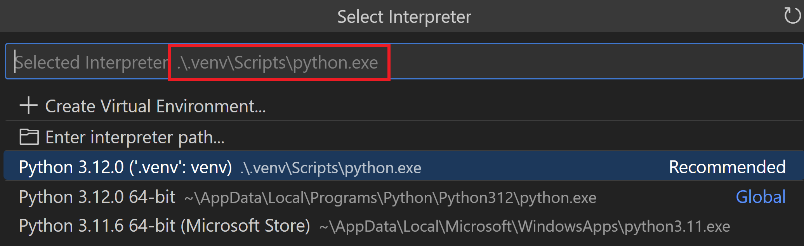
- 您在
launch.json文件中将"type"设置为了已弃用的值"python"：将其替换为"debugpy"以与 Python Debugger 扩展配合使用。 - 监视窗口中有无效表达式：清除监视窗口中的所有表达式并重启调试器。
- 如果您正在使用使用本机线程 API（例如 Win32
CreateThread函数而不是 Python 线程 API）的多线程应用程序，目前需要在要调试的任何文件的顶部包含以下源代码：import debugpy debugpy.debug_this_thread() - 如果您使用的是 Linux 系统，在尝试将调试器应用于任何正在运行的进程时，可能会收到"超时"错误消息。为避免这种情况，您可以临时运行以下命令：
echo 0 | sudo tee /proc/sys/kernel/yama/ptrace_scope后续步骤
- Python 环境 - 控制用于编辑和调试的 Python 解释器。
- 测试 - 配置测试环境并发现、运行和调试测试。
- 设置参考 - 探索 VS Code 中与 Python 相关的设置的完整范围。
- 通用调试 - 了解 VS Code 的调试功能。